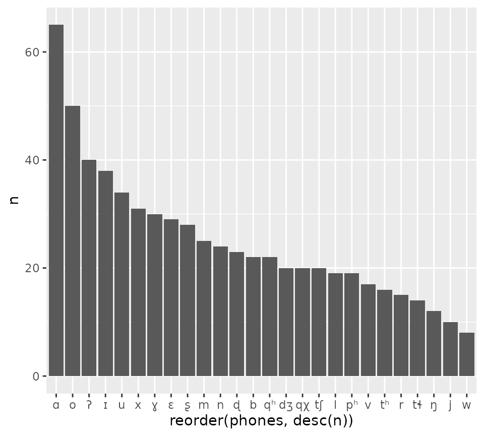
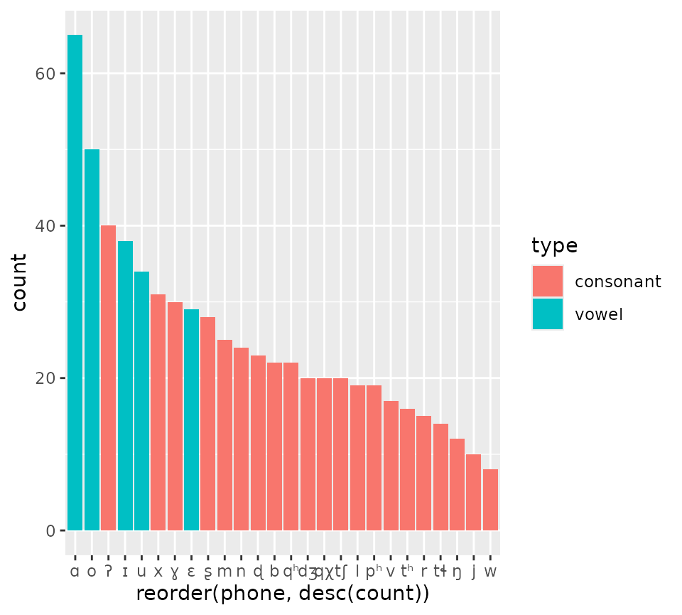

Basic usage
The main function of phonetisr is phonetise(). This
function takes a character vector with IPA transcriptions and splits
them into phones.
ipa <- c("pʰãkʰ", "tʰum̥", "ɛkʰɯ")
phonetise(ipa)
#> [[1]]
#> [1] "p" "ʰ" "a" "̃" "k" "ʰ"
#>
#> [[2]]
#> [1] "t" "ʰ" "u" "m" "̥"
#>
#> [[3]]
#> [1] "ɛ" "k" "ʰ" "ɯ"The default settings will tokenise each IPA symbol separately, rather
than each phone, because by default phonetisr has no concept of “phone”.
IPA diacritics are then tokenised separately. The user can set
diacritics = TRUE to automatically tokenise all diacritics
with the preceding symbol (will not work of course for diacritics that
are placed before the base symbol).
phonetise(ipa, diacritics = TRUE)
#> [[1]]
#> [1] "pʰ" "ã" "kʰ"
#>
#> [[2]]
#> [1] "tʰ" "u" "m̥"
#>
#> [[3]]
#> [1] "ɛ" "kʰ" "ɯ"For the example words above, using diacritics = TRUE
suffices. But what if you want more control? You can use the
multi argument to specify phones that are made of multiple
characters.
ph <- c("pʰ", "tʰ", "kʰ", "ã", "m̥")
phonetise(ipa, multi = ph)
#> [[1]]
#> [1] "pʰ" "ã" "kʰ"
#>
#> [[2]]
#> [1] "tʰ" "u" "m̥"
#>
#> [[3]]
#> [1] "ɛ" "kʰ" "ɯ"In some cases you don’t want a list of tokenised phones, but a vector
where phones are separated by a specified character (like space, or a
dot). You can set split = FALSE and the default separator
(a space) will be used to separate phones in the resulting string. The
separator character can be specified with sep.
phonetise(ipa, multi = ph, split = FALSE, sep = ".")
#> [1] "pʰ.ã.kʰ" "tʰ.u.m̥" "ɛ.kʰ.ɯ"Using tibbles
A common use case of the phonetise() function is with
tibble columns that have IPA transcriptions. The phonetisr package comes
with kl_swades, a tibble with 195 Klingon words and their
IPA transcription.
library(tidyverse)
#> ── Attaching core tidyverse packages ──────────────────────── tidyverse 2.0.0 ──
#> ✔ dplyr 1.1.4 ✔ readr 2.1.5
#> ✔ forcats 1.0.0 ✔ stringr 1.5.1
#> ✔ ggplot2 3.5.1 ✔ tibble 3.2.1
#> ✔ lubridate 1.9.4 ✔ tidyr 1.3.1
#> ✔ purrr 1.0.4
#> ── Conflicts ────────────────────────────────────────── tidyverse_conflicts() ──
#> ✖ dplyr::filter() masks stats::filter()
#> ✖ dplyr::lag() masks stats::lag()
#> ℹ Use the conflicted package (<http://conflicted.r-lib.org/>) to force all conflicts to become errors
data("kl_swadesh")
kl_swadesh
#> # A tibble: 195 × 4
#> id gloss translit ipa
#> <int> <chr> <chr> <chr>
#> 1 1 I jIH dʒɪx
#> 2 2 you (singular) SoH ʂox
#> 3 3 he ghaH ɣɑx
#> 4 4 we maH mɑx
#> 5 5 you (plural) tlhIH tɬɪx
#> 6 6 they chaH tʃɑx
#> 7 7 this -vam -vɑm
#> 8 8 that -vetlh -vɛtɬ
#> 9 9 here naDev nɑɖɛv
#> 10 10 there pa' pʰɑʔ
#> # ℹ 185 more rowsLet’s phonetise the ipa column. We first want to define
multi-character phones.
kl_multi <- c(
"pʰ", "tʰ", "qʰ",
"tɬ", "tʃ", "qχ",
"dʒ"
)Then, we can use mutate() to create a new column
phones with phonetised transcriptions.
kl_swadesh <- kl_swadesh |>
mutate(
phones = phonetise(ipa, multi = kl_multi)
)
#> ℹ The following non-IPA characters were found and removed: -
#>
kl_swadesh
#> # A tibble: 195 × 5
#> id gloss translit ipa phones
#> <int> <chr> <chr> <chr> <list>
#> 1 1 I jIH dʒɪx <chr [3]>
#> 2 2 you (singular) SoH ʂox <chr [3]>
#> 3 3 he ghaH ɣɑx <chr [3]>
#> 4 4 we maH mɑx <chr [3]>
#> 5 5 you (plural) tlhIH tɬɪx <chr [3]>
#> 6 6 they chaH tʃɑx <chr [3]>
#> 7 7 this -vam -vɑm <chr [3]>
#> 8 8 that -vetlh -vɛtɬ <chr [3]>
#> 9 9 here naDev nɑɖɛv <chr [5]>
#> 10 10 there pa' pʰɑʔ <chr [3]>
#> # ℹ 185 more rowsphones is a “list” column, so kl_swadesh is
“nested”: see the Nested data
vignette of tidyr.
A common operation is to count the number of occurrences of each
phone. We can easily do that by first “unnesting” the
phones column.
kl_unnest <- kl_swadesh |>
unnest(phones)
kl_unnest
#> # A tibble: 651 × 5
#> id gloss translit ipa phones
#> <int> <chr> <chr> <chr> <chr>
#> 1 1 I jIH dʒɪx dʒ
#> 2 1 I jIH dʒɪx ɪ
#> 3 1 I jIH dʒɪx x
#> 4 2 you (singular) SoH ʂox ʂ
#> 5 2 you (singular) SoH ʂox o
#> 6 2 you (singular) SoH ʂox x
#> 7 3 he ghaH ɣɑx ɣ
#> 8 3 he ghaH ɣɑx ɑ
#> 9 3 he ghaH ɣɑx x
#> 10 4 we maH mɑx m
#> # ℹ 641 more rowsThen we can count each phone with count().
kl_unnest |>
count(phones, sort = TRUE)
#> # A tibble: 26 × 2
#> phones n
#> <chr> <int>
#> 1 ɑ 65
#> 2 o 50
#> 3 ʔ 40
#> 4 ɪ 38
#> 5 u 34
#> 6 x 31
#> 7 ɣ 30
#> 8 ɛ 29
#> 9 ʂ 28
#> 10 m 25
#> # ℹ 16 more rowsAnd also plot the counts.
kl_unnest |>
count(phones, sort = TRUE) |>
ggplot(aes(reorder(phones, desc(n)), n)) +
geom_bar(stat = "identity")
Add phonetic features
The package comes with a function featurise() which
takes a vector or list of phonetised words and returns a tibble with
counts and phonetic features of the phones.
kl_feat <- featurise(kl_swadesh$phones)
kl_feat
#> # A tibble: 26 × 17
#> phone count base unicode uni_name ipa_name phon_type type height_ipa height
#> <chr> <int> <chr> <chr> <chr> <chr> <chr> <chr> <chr> <chr>
#> 1 w 8 w U+0077 latin s… voiced … base cons… NA NA
#> 2 j 10 j U+006A latin s… voiced … base cons… NA NA
#> 3 ŋ 12 ŋ U+014B latin s… voiced … base cons… NA NA
#> 4 tɬ 14 t U+0074 latin s… voicele… base cons… NA NA
#> 5 r 15 r U+0072 latin s… voiced … base cons… NA NA
#> 6 tʰ 16 t U+0074 latin s… voicele… base cons… NA NA
#> 7 v 17 v U+0076 latin s… voiced … base cons… NA NA
#> 8 l 19 l U+006C latin s… voiced … base cons… NA NA
#> 9 pʰ 19 p U+0070 latin s… voicele… base cons… NA NA
#> 10 dʒ 20 d U+0064 latin s… voiced … base cons… NA NA
#> # ℹ 16 more rows
#> # ℹ 7 more variables: backness <chr>, rounding <chr>, voicing <chr>,
#> # place <chr>, manner <chr>, lateral <lgl>, sonorant <lgl>We can use the info for plotting.
kl_feat |>
ggplot(aes(reorder(phone, desc(count)), count, fill = type)) +
geom_bar(stat = "identity")
featurise() uses the info stored in
ipa_symbols, which comes with the package. Note that the
phonetic features included are only based on the IPA tables: the package
is not aware of language-specific features.
data("ipa_symbols")
ipa_symbols
#> # A tibble: 188 × 15
#> IPA unicode uni_name ipa_name phon_type type height_ipa height backness
#> <chr> <chr> <chr> <chr> <chr> <chr> <chr> <chr> <chr>
#> 1 a U+0061 latin smal… open fr… base vowel open low front
#> 2 æ U+00E6 latin smal… raised … base vowel raised op… low_r… front
#> 3 ɐ U+0250 latin smal… lowered… base vowel lowered low_r… central
#> 4 ɑ U+0251 latin smal… open ba… base vowel open low back
#> 5 ɒ U+0252 latin smal… open ba… base vowel open low back
#> 6 b U+0062 latin smal… voiced … base cons… NA NA NA
#> 7 ʙ U+0299 latin lett… voiced … base cons… NA NA NA
#> 8 ɓ U+0253 latin smal… voiced … base cons… NA NA NA
#> 9 c U+0063 latin smal… voicele… base cons… NA NA NA
#> 10 ç U+00E7 latin smal… voicele… base cons… NA NA NA
#> # ℹ 178 more rows
#> # ℹ 6 more variables: rounding <chr>, voicing <chr>, place <chr>, manner <chr>,
#> # lateral <lgl>, sonorant <lgl>